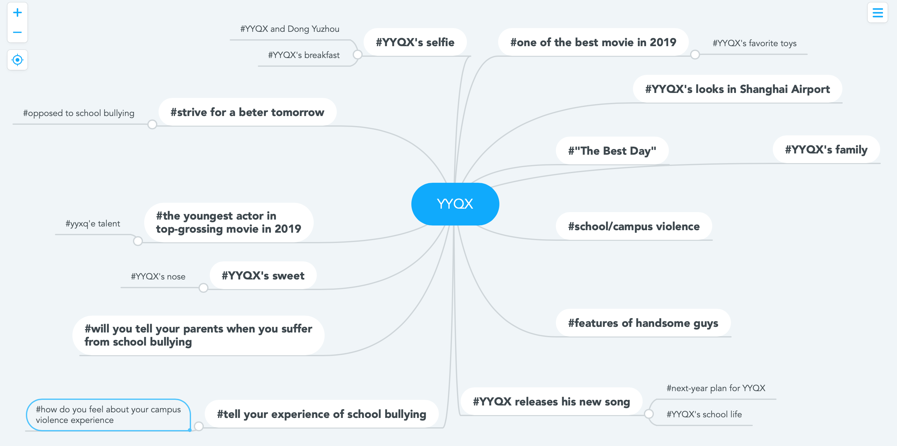

Visualization of YYQX's traffic after "The Best Days" was released
calender chart representing the traffic brought by YYXQ on Weibo(a Chinese Socila Media)
This is the Calendar Chart, which represents the number of times YYQX was searched on Weibo per day after the movie "The Best Days" was released.
box office of "The Best Days" in different states in USA
According to the choropleth map, we can see that people on th East and West coasts contribute most of the box office of "The Best Days". It probably because there are
a large amount of Chinese people living there, so lots of them watched this chinese
This is the choropleth map, which represents the amount of box office of movie "The Best Days" according to the states in United States.
Brainstorm map of the hottest topics related to YYQX

This is the brainstorm chart, representing the hottest topics related to YYQX on weibo. According to the map, we can clearly know which topics the fans of YYQX
would like to know and which aspects of YYQX is most attracting.